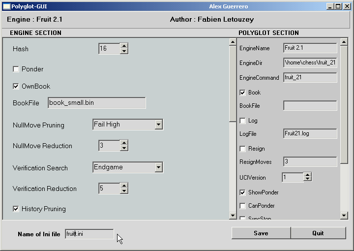

The WinBoard Gold Pack 4.4.0
For the ultimate WinBoard experience!

The WinBoard Gold Pack 4.4.0For the ultimate WinBoard experience! |
|
UCI engines need the Polyglot adapter to communicate with WinBoard. As far as WinBoard is concerned, Polyglot is the engine. Polyglot has to be instructed to which real engine it should 'connect', and it takes this information from file, known as a Polyglot .ini file. Apart from telling polyglot which UCI engine to run, Polyglot alo has to supply all paramter settings for this UCI engine that WInBoard doesn't. And UCI engines usually need a lot more support from their GUI than WinBoard engines. Polyglot has to fill in the gaps, again from information stored in the Polyglot .ini file.
This leaves us with the problem to fill that Poglot .ini file with all the required info. For the engine name, location and standard parameters this is not such a big problem: we could copy the .ini file of another engine, and just change the name in it. But every UCI engine defines its own engine-specific options, and they all do it in different ways, needing different values for them. Polyglot GUI is a program that figures out what options a UCI engine needs, and what their defaut settings what should be. It then can create a Polyglot .ini file for that engine that contins all this information.
Navigate to the Polyglot14w folder of the WinBoard Gold Pack. This folder contains two application files, polyglot itself (which is there ony for running by WinBoard), and Polyglot GUI. Double-click the latter to start Polyglot GUI. A file-selector window will pop, though which you can browse to one of your UCI engines. By double-clicking the engine application file in the corresponding engine folder, you will make Polyglot GUI interrogate this engine in UCI protocol, to learn which options it supports and requires. In this example we have used Fruit 2.1 for this purpose.
After selecting the engine, a window that is divided in a right and left part will appear. On the left you will see a set of controls for the engine-specific options, on the right the options for Polyglot (which are thus always the same). Both parts of the screen have a vertical slider, as the number of options is usually too large to fit the window. Fortunately all options are already preset to their default value, and unless you know very well what an option does, it is best to leave it there. So we will now only discuss the options that require attention.
We start wit the Polyglot settings on the right. From top to bottom we see: Engine name, installation folder and name of the application. In fact this is what we just entered by clicking the engine application, so it is always correct. Then we must select if Polyglot wil use a book on behalf of the engine, and where to find this book file (which must be a book in Polyglot format). Although WinBoard is also able to consult a book on behalf of the engines, it currently always consults the same book for both engines. So it does not make much sense to ut the same general book here as WinBoard is already using. But some UCI engines are dependent on Polyglot for their opening book, although it is a book that is made especially for them. For such engines it would make sense to put the book dedicated to them here. Then they can use their private book, while the opponent is using another one. Fruit downloads usually comes with an opening book called "book_small.bin", and we could type that in the book field, provided that we have put it in the Polyglot14w folder with the other Polyglot books, including the general book "default.bin" that came with the WinBoard Gold Pack. If we prefer to keep the book in the Fruit2_1 folder, we must type "../Fruit2_1/book_small.bin" here (without the quotes). This is not really needed, though, as Fruit is perfectly able to consult its own book. (Polyglot and Fruit use the same book format, as they are by the same author!)
Next check box and text field only have to be completed if we want to make a log file (recording all communication between Polyglot and WinBoard), which makes little sense for normal use. (It is meant for debugging.) Then we can control if Polyglot must be able to resign on behalf of the engine. (UCI engines cannot resign by themselves.)
The left part of the Polyglot GUI window will look different for every engine, as it represents the engine-specific options. Some options are standard, though. These are shown at the top. We startd there entering the size of the hash table. (Future Polyglot versions might overrule this with the value specified in WinBoard, but for now it is an important engine parameter.) The check box that follows is not important, as Polylot will translate and transmit the ponder command from WinBoard to the engine in real time, and is not dependent on a static setting gven in the Polyglot .ini file. If you want to run matches between 2 engines, select about 1/4 of your computer's memory size.
Next you would have to specify if the engine has an "own" book, i.e. one that it can consult without the aid of Polyglot. We already mentioned that for Fruit you can do both, because the format of ts own book is the same as hat of a Polyglot book. But in general, that will not be the case, and books downloaded with the engine might have an unknown proprietry formt. Then it is really essential to put the name of that book here, and not in the right part as Polyglot book, as Polyglot wouldn't understand any of it. In the Fruit example, the following options are already specialist options for tuning the engine, and we leave them alone.
SMP engines might have another important parameter, the number of CPUs they must use. The name for this option is not standardized, but contains something like "threads", "cores", or "CPUs" in its description. Better not use values larger than the number of cores your computer has if you plan to play without ponder, and even half of tat when you want to play with ponder on.
The last, and most important step is to save the settings we just made in a Polyglot .ini file. To this end we must first type the name of the file we want, which is the name that we also use when installing the engine in the PSWBTM engine database. This name must be unique, as all Polyglot .ini files sit in the same folder in the configuration the WinBoard Gold Pack uses. So never call it polyglot.ini, as Polyglot GUI proposes. For Fruit we would call it fruit.ini. If we have multiple versions of Fruit on our computer they all must have their own .ini file with its own unique name. After having typed this name, we click the "Save" button on the bottom right. That terminates Polyglot GUI, and leaves the .ini file in the Polyglot14w folder (which is where Polyglot expects it).